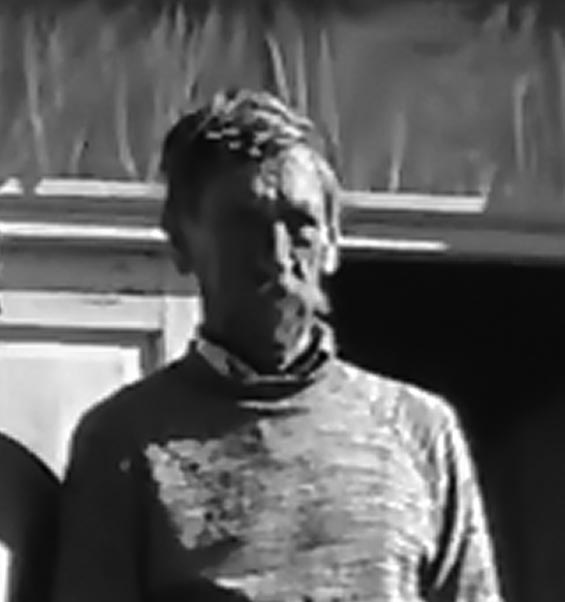

Oszust z Kopysna na cesarskim dworze
Przy okazji, bardzo dziękujemy Panu Oskarowi za fotografie z wiedeńskiego cmentarza i serdecznie pozdrawiamy :)
Jak zapewnialiśmy na stronie chcemy umieszczać filmy amatorskie, stąd ich jakość nie będzie wszystkim odpowiadać, a i treści mogą razić estetów. Nagrane przez nas krótkie ujęcie powstało w 2003 r. i zostało zarejestrowane kamerą VHS. Czy ktoś pamięta, jak zwał się pies Państwa Kettnerów?
W sieci pojawił się niedawno bardzo ciekawie zrealizowany film:
"#2 Ucieczka w Bieszczady, Góry Słonne i Pogórze Przemyskie"
w którym jego autor prowadzący nie omieszkał odwiedzić pieszo także naszej miejscowości.
Polecamy obejrzeć cały film - youtu.be, natomiast fragment o Kopysnie zaczyna się w tym miejscu -www.youtube.com .
Dotarła do nas wczoraj smutna wiadomość o śmierci Mariana Sroki, znanego większości jako "Anuś", który był niegdyś związany z Kopysnem m.in. poprzez pracę w tej miejscowości, i którego nie można zapomnieć m.in. z uwagi na niezwykłą osobowość i liczne anegdoty, których był udziałem.

Posiadamy nagraną pod koniec sierpnia 2003 r. w Kopysnie niepublikowaną rozmowę z Marianem, podczas której swoim barwnym, charakterystycznym językiem widząc puste i niszczejące zabudowania wyraził chęć "garażowania" w Kopysnie, a o swoim zdrowiu mówił, że jest jak "ul, którego nie ruszają bąki". Poza mikrofonem wspominał "posiedzenia rady zakładowej" u Michaliny Nienadowskiej.
Wierzymy, że w słusznym czasie Anuś i inni zjawią się w Kopysnie na "posiedzeniu", które zapewne będzie mieć inny, lepszy cel niż określony w tym świecie.
Znaleźliśmy na stronie us.archive.org ((Церква в руїні. Загибель українських церков Перемиської епархії (Church in Ruins. The Demise of Ukrainian Churches in the Eparchy of Peremyshl)) fotografie cerkwi i dzwonnicy wykonane w latach 80. XX w.
Mamy w planie produkcję krótkich amatorskich filmów związanych z Kopysnem, które będą dostępne wyłącznie na naszej stronie.
1 stycznia 2021